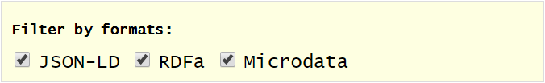
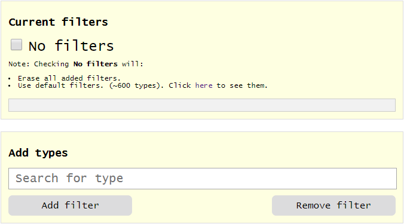
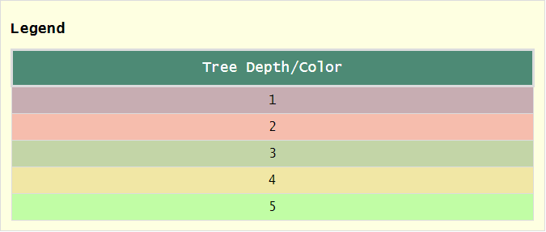
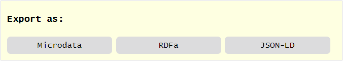
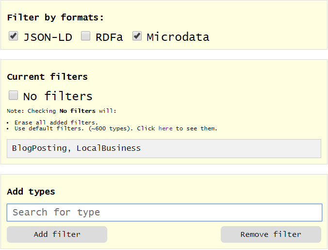
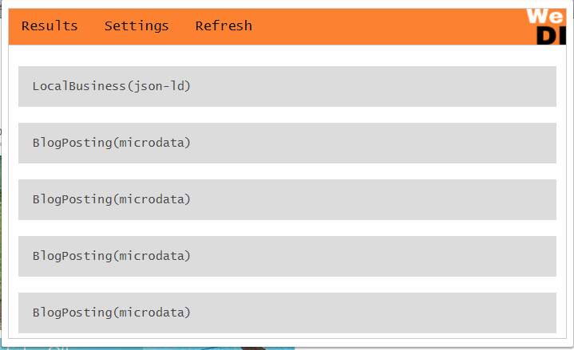
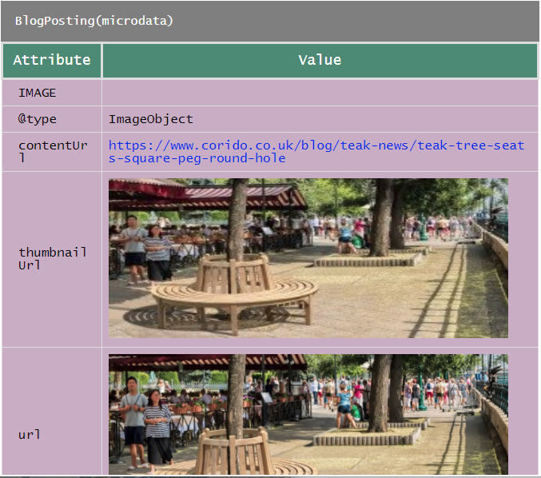
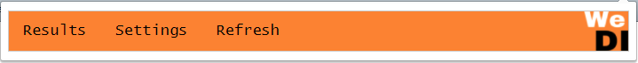
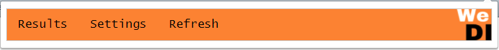

2. Settings
Pressing the "Settings" button found in the menu gives access to the extensions settings. The setting panel has several options
which can be modified.
The first option refers to the formats which should be searched for.

Unticking or ticking a format will remove, respectively add the format to be searched. The second option
gives you the ability to add filters (e.g. Person, Action, Movie) or remove them. There are implicit
types which are showed by the extensions, or custom types, which you may create to be used as filters.

Ticking the "No filters" box removes all the added filters (even the custom ones) and instead searches for
every type on the page. Once an option is changed, you should press the "Refresh" button in order to
apply the filters and formats you added.
The settings panel also features a "Legend" panel.

The settings panel has an exporting feature, allowing you to export the results as HTML pages which use the RDFa/Microdata/JSON-LD
formats

3. Results
Pressing the "Results" button searches and displays all the types and formats ticked in the settings panel. For example,
if we want to look for JSON-LD and Microdata formats only, and the types we want are "BlogPosting" and "LocalBusiness",
the settings would look like this:

And the results would look like:

To look at a result, simply click on it. The contents of a result should look like: >

If the options are changed, you should click on the "Refresh" button to get the new results.
 click on the
icon found on the top-right corner of your browser. This will open the menu, which should look like

click on the
icon found on the top-right corner of your browser. This will open the menu, which should look like
